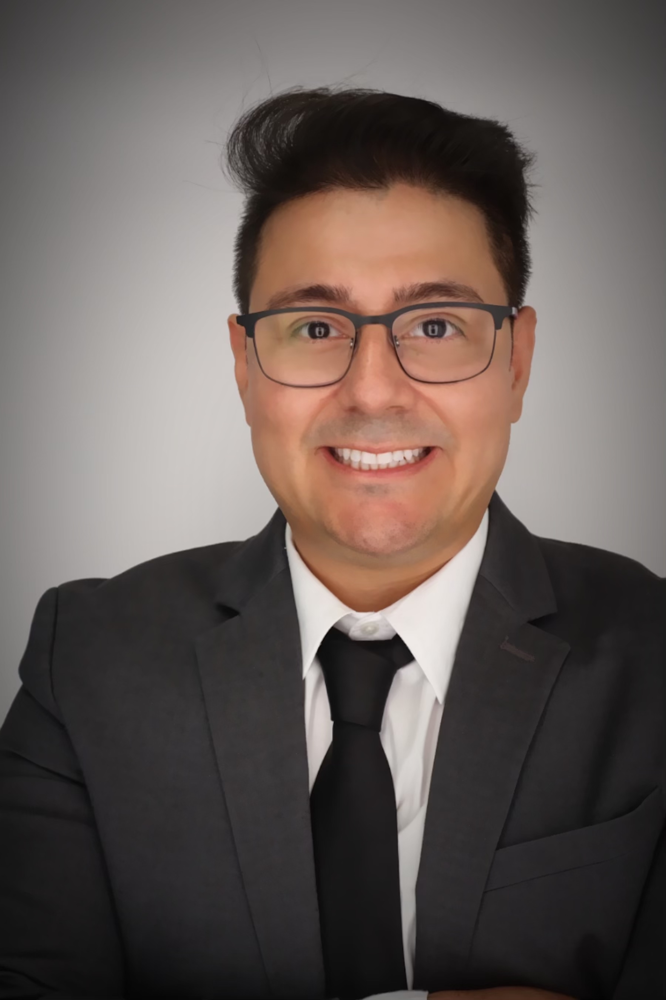
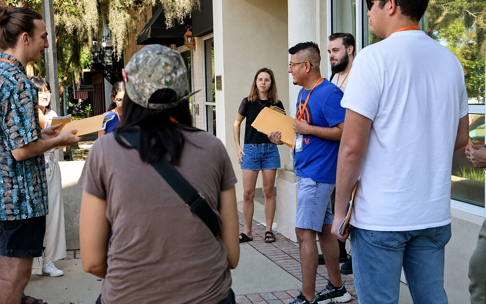
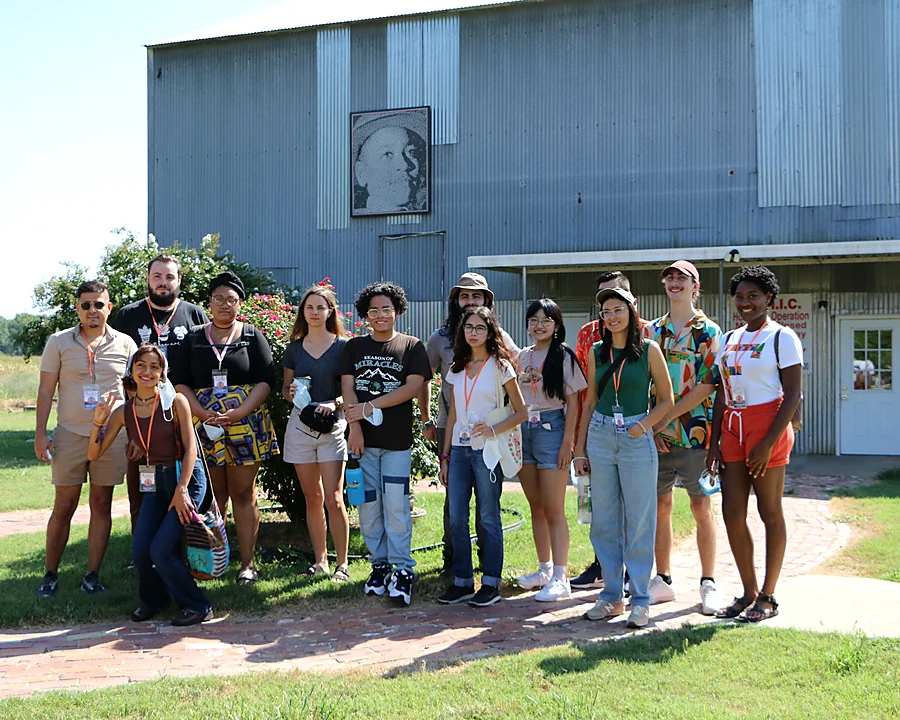
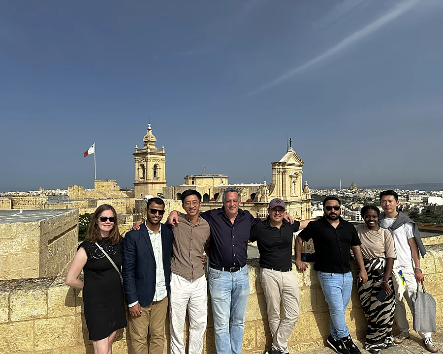
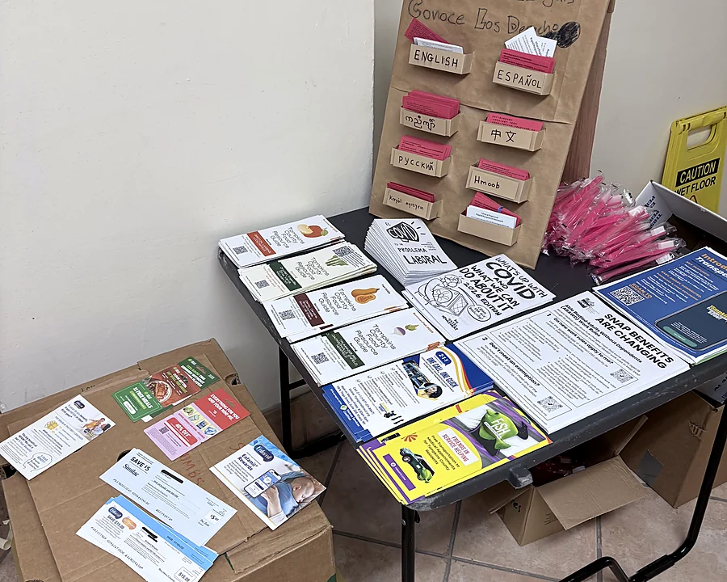
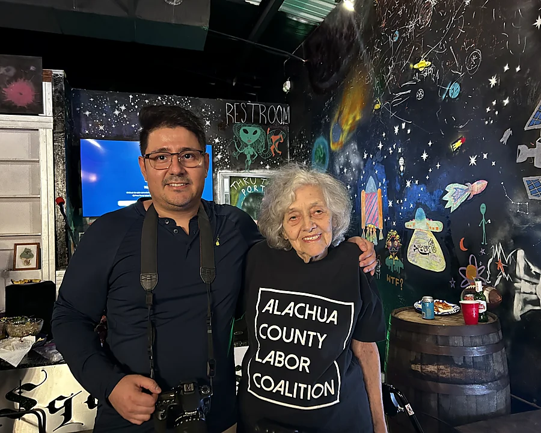
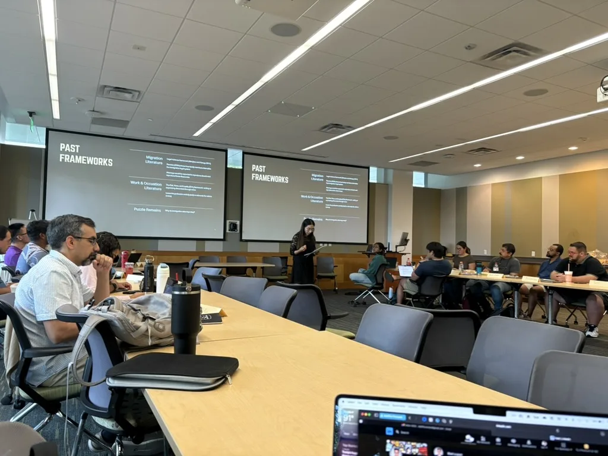
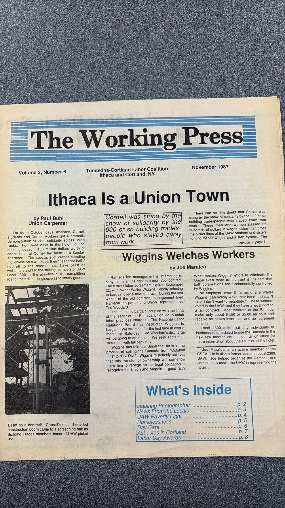
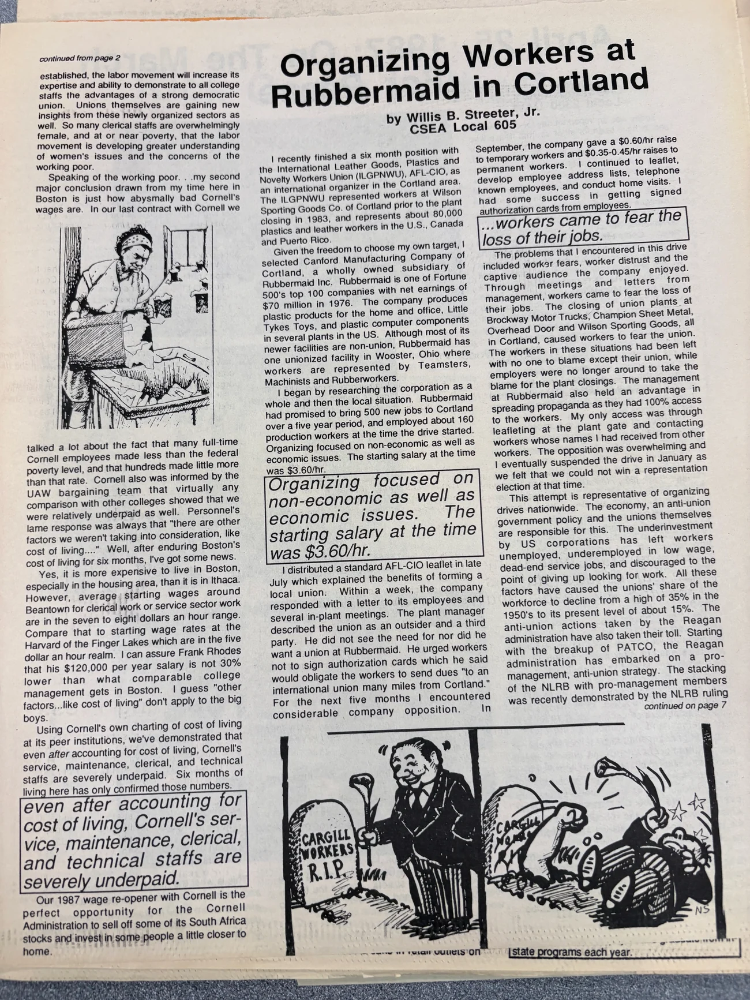
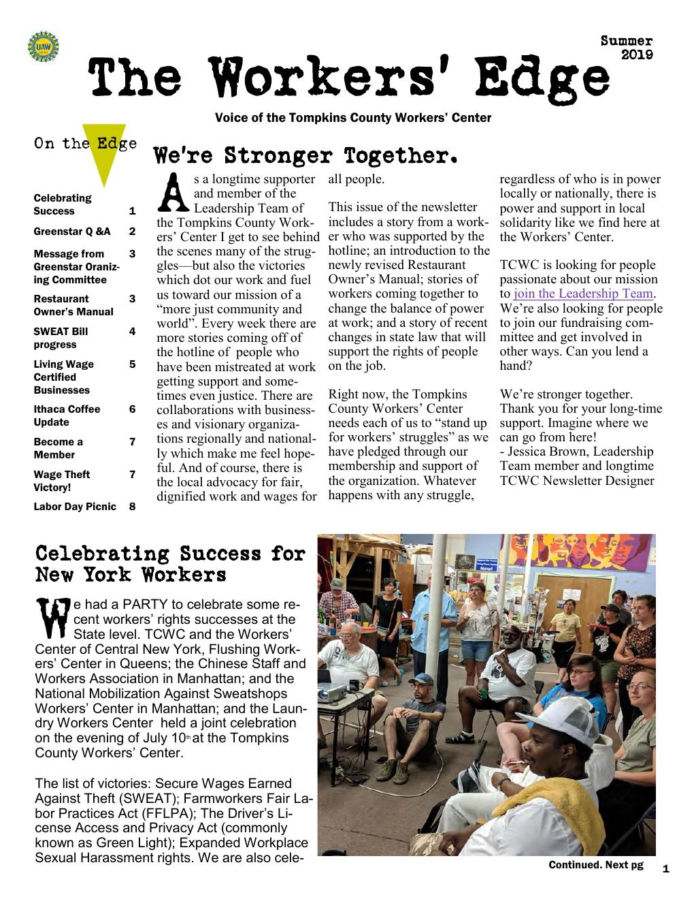

LERA 79th Annual Meeting
I presented “Is Ithaca Still a Union Town?”—research on worker power, local labor repertoires, and uneven regeneration in Tompkins County from 1984 to 2026.
See current academic work
“I am grateful to work alongside community organizations, mentors, and workers in the ongoing struggle for dignity and justice.”
Transparent counts with conservative rounding. Updated 2026.
Grant total reflects full award amounts for projects I contributed to and does not represent personal earnings.
A few recent places where my doctoral research has been tested, sharpened, and placed in conversation with other scholars.
I presented “Is Ithaca Still a Union Town?”—research on worker power, local labor repertoires, and uneven regeneration in Tompkins County from 1984 to 2026.
See current academic work
Selected for an intensive graduate institute on racial politics, democratic backsliding, authoritarianism, and institutional power—with scholarship support for participation.
Follow the research trajectoryMy research begins with relationships. I learn alongside students, workers, organizers, and community partners—and I try to carry what they share with care. These moments offer a glimpse of the listening, learning, and collective work behind my scholarship.

As Assistant Director of the Samuel Proctor Oral History Program, I helped lead week-long field programs in the Mississippi Delta. We prepared students to understand the history of the places we entered, listen with humility, and recognize community members as the experts on their own lives.
How I approach fieldwork: arrive prepared, listen carefully, and remain accountable after the interview ends.
Visiting sites connected to Emmett Till helped us understand how memory lives in the landscape—and why confronting racial violence requires listening to the people who continue to carry that history.

At the Cornell–Queen Mary Global Migration Spring School, I learned with scholars working across disciplines and borders. Our time in Malta pushed me to think more carefully about how migration is experienced, governed, and contested.
At a No Kings Day gathering, I documented one small part of a much larger public struggle: immigrant workers, families, and allies standing together for dignity and belonging.

Working with Ana Ortiz, No Más Lágrimas, and local partners reminded me that useful research must also be accessible. Multilingual know-your-rights materials are one way knowledge can move back into the community.

Labor history lives through people and the relationships they build. Working alongside community organizers has taught me that research matters most when it remains accountable to the people whose experiences give it meaning.

At UT Austin’s Urban Ethnography Lab, I sharpened how I observe interaction, conduct in-depth interviews, analyze qualitative data, and document ethical decisions. The experience now informs my comparative research with worker centers in New York and Florida.
A note on these photographs: I share them as records of work done in relationship with others. The captions explain my role while honoring that the labor, histories, and experiences pictured belong to the communities themselves.
My dissertation research follows how workers and community organizations in Tompkins County built collective capacity beyond the traditional union hall. The Working Press and The Workers’ Edge show how those groups explained workplace struggles, connected campaigns, and created a public language of solidarity.



The question guiding this work: What kinds of power become possible when workers build their own institutions, media, relationships, and memory?
I am a PhD student in Cornell University’s School of Industrial and Labor Relations. I study how worker centers and community organizations help immigrant, low-wage, and undocumented workers build voice, leadership, and collective power—especially when traditional union protections are out of reach. Drawing on oral history, ethnography, and the Power Resource Approach, I look closely at how grassroots organizations create spaces of dignity and democratic participation within unequal labor systems.
This work is personal to me. I come from a working-class Mexican and Salvadoran family in Humboldt Park, Chicago, where I saw how hard people worked and how often their knowledge went unrecognized. Years of fieldwork—from documenting Black resistance in the Mississippi Delta to collaborating with Indigenous communities through the Doris Duke Oral History Project—have deepened that commitment. I approach labor scholarship as a form of listening: grounded in collective memory, accountable to the people who share their stories, and connected to struggles for dignity and justice.
A selective record of research presentations, methods training, and community-engaged work—organized from newest to oldest and grounded in the role I held.

I presented “Field Generated Power Resources in Decentralized Labor Ecosystems,” connecting worker-center strategy to broader debates about labor power.

I supported an immigrant-rights safety patrol alongside Indivisible, No Más Lágrimas, Ana Ortiz, and other local partners working to protect immigrant neighbors.

I strengthened my practice of interviewing, interaction analysis, qualitative memoing, evidentiary reasoning, and non-extractive fieldwork.